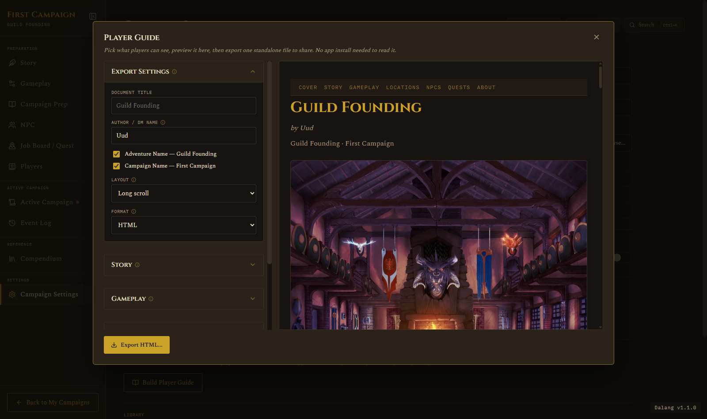
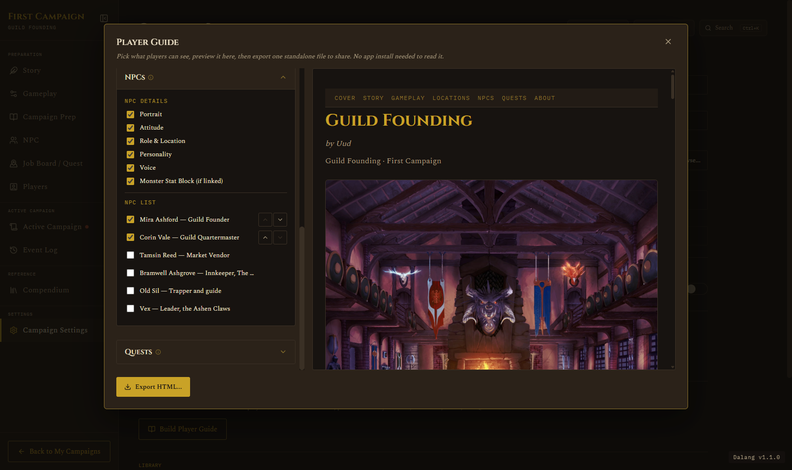
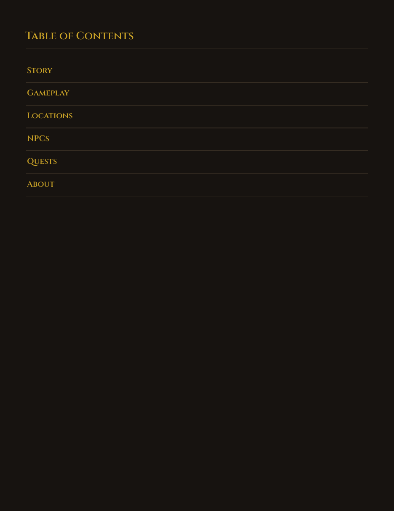

Player Guide
Settings · Player Guide
A standalone file your players can browse themselves, no app install needed. You pick exactly what goes in: which Story sections, which Locations, which NPCs, which Quests. Nothing else is ever included, DM Notes, Encounters, Treasure, Maps, and an NPC's Goal/Secret aren't gated behind a toggle, this export simply doesn't know those fields exist.
Open Campaign Settings and click Build Player Guide. The checklist on the left controls what's included, the preview on the right updates live as you check things off.

Choosing what's included
Every chapter, Story, Gameplay, Locations, NPCs, Quests, works the same way: a set of per-field toggles at the top (so you can leave out an NPC's Voice notes but keep their Portrait, for instance), then a list of every Location/NPC/Quest in the campaign. Check one to include it, and use the small up/down arrows to reorder it within the exported guide. Included items float to the top of the list so you're not hunting for them.

Each chapter's accordion remembers whether it was open or closed the next time you open Player Guide, so if you're only ever touching NPCs and Quests, Story and Gameplay can stay tucked away.
Layout: Long Scroll or Tabbed
Long Scroll puts everything on one continuous page, players scroll through it top to bottom. Tabbed adds a small nav bar so players click between Story, Locations, NPCs, and so on without scrolling through sections they don't need right now. Both are one file either way, this only changes how it reads.
Format: HTML or PDF
The preview always shows the HTML layout, since that's what a DM is actively shaping. PDF export builds from the same content but adapts it for print:
- A real, clickable Table of Contents page replaces the on-screen nav, which doesn't survive pagination.
- Every chapter always starts on its own printed page, regardless of the Layout choice above, so nothing runs together mid-page.
- Anything collapsible on screen, a monster's Stat Block, a Tabbed panel, prints fully expanded. A printout can't be clicked open.
- Cross-reference links (an NPC's "Found at," a Quest's "Given by") always stay real, clickable links in the PDF, even where Tabbed layout would otherwise show them as plain text on screen.
There's also a Print-friendly checkbox, PDF only: swaps the app's dark theme for a light, white-background palette that costs less ink on a real printer. Everything else about the layout stays the same, it's a recolor, not a redesign.

Want to see a real one before building your own? Download a sample Player Guide PDF, exported straight from the app's own built-in starter adventure.
Exporting
Click the Export button (it reads "Export HTML..." or "Export PDF...", matching whichever Format is selected) and choose where to save. That's it, one file, ready to send to your players however you'd normally share things with them, Discord, email, a shared drive, whatever your table already uses.